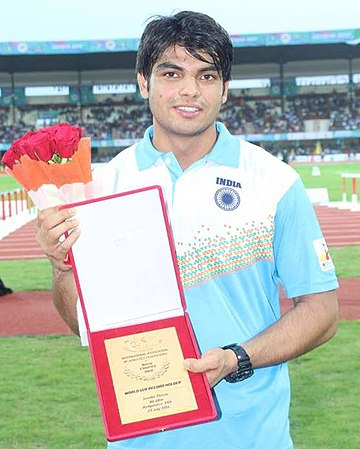

In the men's javelin throw, Neeraj Chopra won India's first-ever gold medal in athletics, the nation's second ever individual gold and first individual gold since the Beijing 2008 Olympics, won by Abhinav Bindra (Shooting). This was also India's first athletics medal since its first Olympics appearance as an independent nation in 1948, and its third overall after Norman Pritchard's silver medals in 1900.
